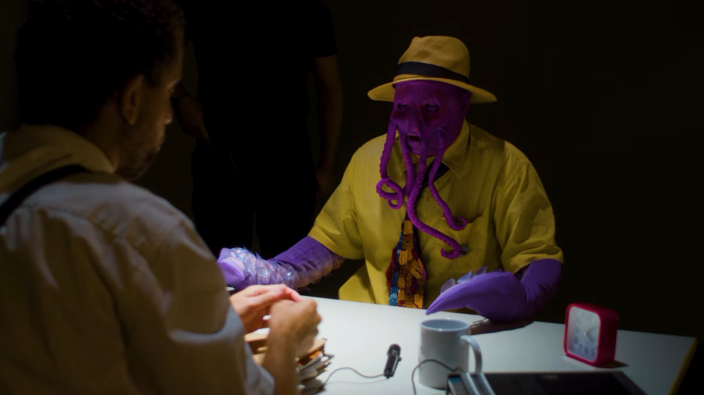
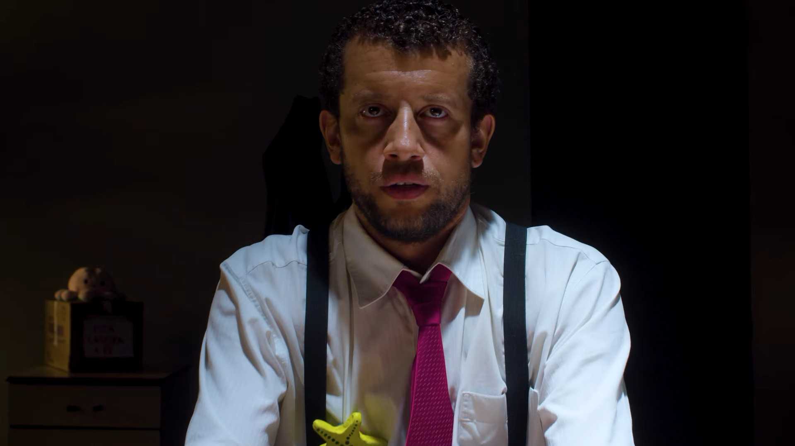
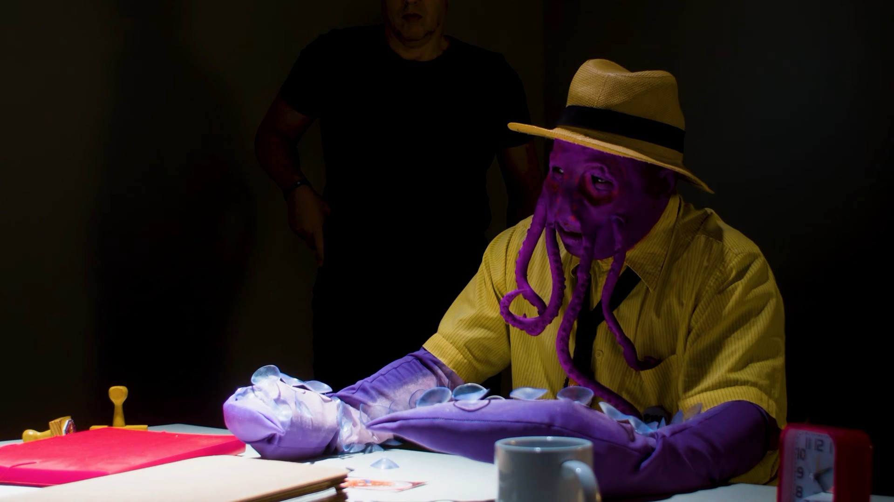
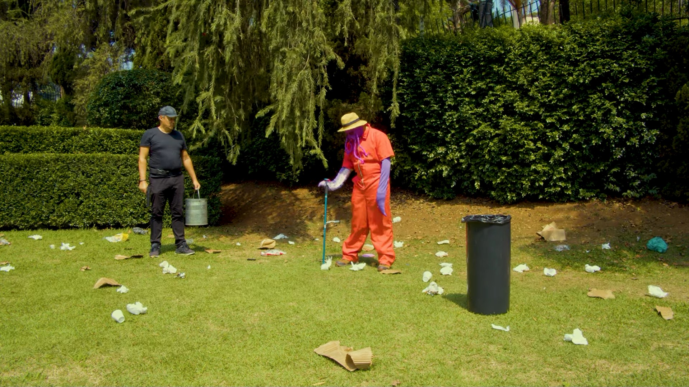

Edição · 2024
Polvo Livre
Projeto de edição audiovisual do curta-metragem "Polvo Livre", dirigido por Leonardo Valota.
EDI

- Categoria
- Edição
- Função
- Editora de vídeo
- Ano
- 2024
- Programa de edição
- Adobe Premiere Pro
Sobre o
projeto
Gravado em dezembro de 2024, este curta conta a história de Octo de Oliveira, interpretado por Deni Montserrat, que é interrogado pelo Policia Um, interpretado por Augusto Sales, por suas atividades suspeitas no restaurante Prainha Fresquinha.
Link do curta ↗Frames & bastidores



Ficha técnica
- Edição
- Julia Figueirôa
- Direção
- Leonardo Valota
- Produção
- Sofia Franco Pavan
- Instituição
- FAAP